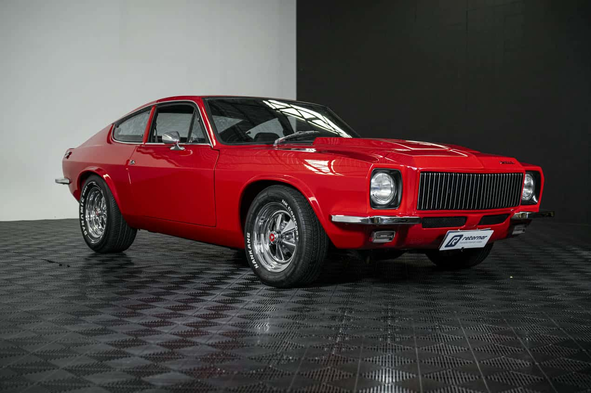

OLDSCHOOL
Ficha Técnica
Ano
1967 - 1989
Motor
1.6 | 4 cilindros
Potência
65 cv
Câmbio
Manual | 4 marchas
Tração
Traseira
Carroceria
Coupé
Combustível
Gasolina
FIPE
R$ 50.000 ~ R$ 130.000
Um esportivo que nasceu brasileiro
Com carroceria leve de fibra de vidro e visual marcante, o Puma conquistou seu espaço entre os esportivos brasileiros. Pequeno, baixo e divertido de dirigir, virou um dos maiores símbolos da criatividade da indústria nacional.